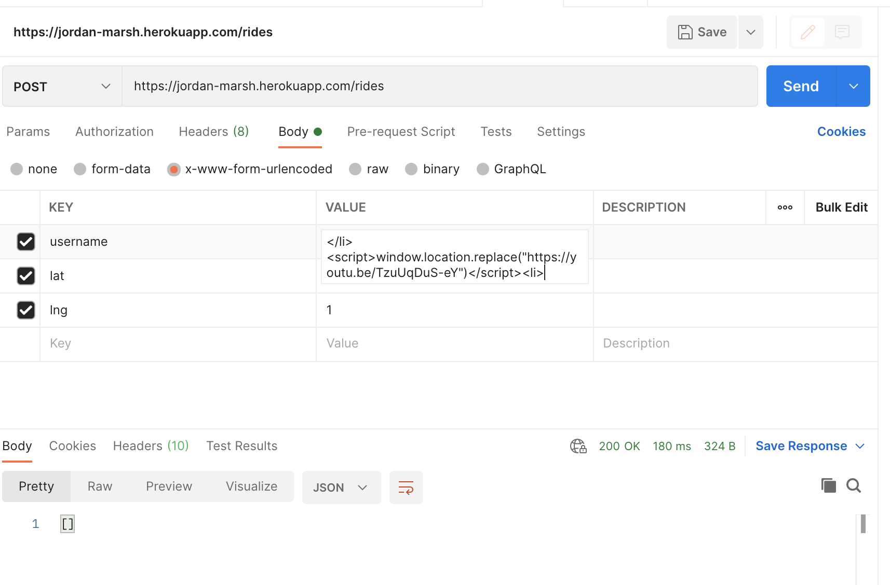
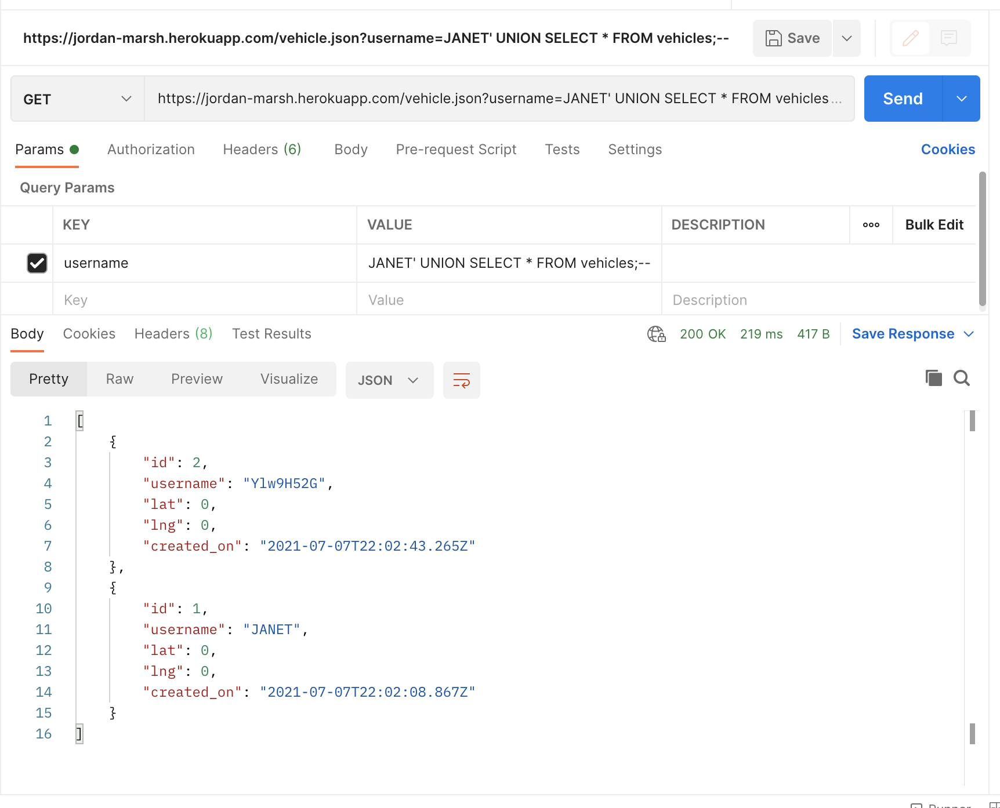
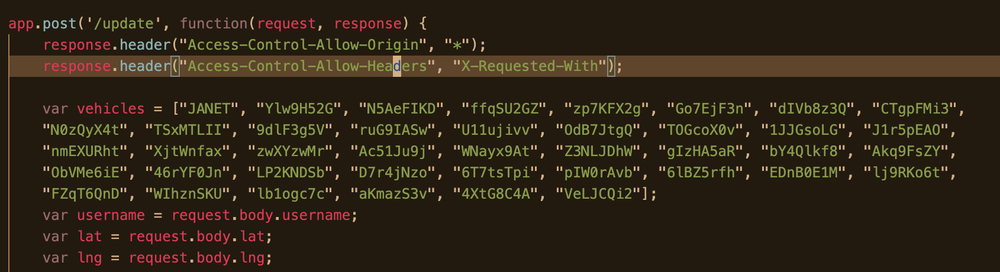

By C.R. Calabrese, July 7, 2021
Jordan Marsh's website, "Not Uber," is a minimalist ride sharing service. Users can request rides or post the message that they are offering a ride.
I was asked to write a report on this site's security practices, noting in particular any specific security issues I can find and confirm to be active vulnerabilities of the site. I was given the JavaScript code and package.json for the site and asked to find vulnerabilities by any methods necessary -- both dynamic and static analysis; and black-box and white-box testing. i.e. I looked for vulnerabilities with and without reading the source code; and I analyzed the code without running it first, but then dynamically confirmed the vulnerabilites I found by testing the actual behavior of the site.
I didn't have a full spec or README for the website readily available to me, besides my familiarity with similar "Not Uber" rideshare services. So, to start, I needed to get a sense of the site's available paths and intended functionality. First, I went to the main page of the site. I got the sense from that page that the site had already been compromised. Then I skimmed the source code to see what kinds of requests the site will respond to and what the website is supposed to do.
The code proved to be a promising starting point, and for each path of the site I read the source code for inspiration as to what possible vulnerabilities might exist. Then, upon finding a suspected vulnerability, I used Postman to test whether I could breach the site.
For further ideas of vulnerabilities to look out for, I referenced Mitre's "2020 CWE Top 25 Most Dangerous Software Weaknesses" list.
I used Burp suite's proxy to prevent unwanted redirects and popups put in place by other attackers, and OWASP ZAP to scan the site for potential vulnerabilities.
Jordan Marsh's "Not Uber" site has severe vulnerabilites that must be addressed immediately.
Firstly, the main page of the site is vulnerable to cross-site scripting, meaning attackers are able to edit the webpage itself and even execute arbitrary code without any authorization. I noticed this immediately because attackers had clearly already found this vulnerability before I first accessed the site. This is dire because it means other scripts (essentially, arbitrary code) could be sourced, destroying the site or even spreading malware.
Secondly, parts of the site that interact with its SQL database are vulnerable to SQL injection, meaning that a hacker could craft a special query that does additional, unauthorized things to the database. The potential effects of this are very serious, even including the possibility of a hacker erasing all of the data in the database or accessing users' confidential information.
Finally, the list of credentials for the "update" path is hard-coded into the site's JavaScript code, meaning if a username is compromised, it will be difficult to fix the breach and attackers will be able to bypass the authorization system and insert incorrect information into the vehicles table, compromising the usefulness of the site. This also indicates a design flaw in the site, since fixing this issue will require that all currently registered users of the site change their usernames. When fixing the issue of hard-coded credentials, the authorization system shouls also be changed so both a username and password are required. This way, in the event of a breach, the credentials can be updated by simply changing the passwords.
The main page of the website's purpose is to load a list of passengers who are waiting for a ride. This seems innocent enough, but the list of passengers comes from a SQL database of passengers that any user can submit to without any authorization. Then, the passenger information is not sanitized at all before being rendered as HTML.
This means more-or-less arbitrary JavaScript code can be executed fairly easily by submitting it as a rider's username. For example, by taking advantage of this cross-site scripting vulnerability, I was able to make the home page redirect to another URL of my choice. Though I chose something fairly innocuous, it still rendered the site unusable -- and a malicious hacker could do much worse. Therefore, the severity of this issue is high.
It's crucial to fix this issue by sanitizing user inputs to the passengers database (in other words, at the /rides path). The most straightforward way to alleviate this issue would be to limit the length of passenger usernames. Usernames typically don't need to be very long, and if there isn't enough room to fit an opening script tag and src attribute, then hackers will not have such a simple way to execute their own code on the site. Note that the character limit should be pretty low, to avoid hackers using URL shorteners to bypass this.
Input can also be sanitized by removing characters that are necessary to execute JavaScript from this part of the page. For example, the < and > characters typically aren't needed for a username, but would prevent an attacker from closing and opening HTML tags using their username listing.
Finally, libraries such as
https://github.com/validatorjs/validator.js
can be used to conveniently sanitize user input and prevent cross-site scripting attacks. For the
/rides path, writing var username = validator.escape(request.body.username); instead of
var username = request.body.username; would prevent JavaScript from being executed
by preventing attackers from opening and closing HTML tags. Whatever script they attempted to use
would simply show up as a literal string for their username.
This issue is rather similar to the first issue, though instead of having to do with the HTML and JavaScript of the webpage itself, it has to do with the server's interaction with its SQL database. It occurs in exactly the same manner in the vehicles.json and passenger.json paths. I will refer to the vehicles path as my example.
These routes are meant to allow users to look up all vehicles for the given username. However, because the input isn't sanitized at all, attackers can inject arbitrary SQL code into their queries and manipulate the database.
Below is an example of how one could use SQL injection to access information which they are not meant to see, which is all of the vehicles for every user of the site:
Breach of users' privacy is on its own quite dire. However, attackers could do even worse by using a ; in their query to execute multiple SQL statements. Arbitrary SQL could be injected here, so an attacker could go so far as to even alter or remove entire tables or schemas, as one of my colleagues did earlier today.
Furthermore, SQL injection, like cross-site scripting, is a common vulnerability and often the first thing an attacker will try. Because this vulnerability is so likely to be discovered and can lead to breach of users' privacy or even loss or corruption of their data, the severity of this vulnerability is high.
The remedies to this issue are similar to those for the cross-site scripting vulnerability. Namely, user input should be sanitized. Again, there should be a character limit on usernames, and the query should be truncated to that length as a simple way of cutting back on this issue. If there is no room to write syntactically correct SQL, it is much harder for attackers to execute arbitrary code.
Furthermore, as in the other vulnerability, input could be sanitized by removing significant characters such as ' and ;. The single quote allows for SQL injection by letting the attacker mark the end of the username query string, and the semicolon allows for execution of multiple SQL statements by allowing the attacker to end one statement. Though some names include the character ', so this policy might be an inconvenience to some users, it is a relatively straightforward way to fix this severe vulnerability and would likely be worthwhile.
Again, the validator library can be used. In this case, validator.blacklist
should be run on the input to remove the suggested ' and ; characters, as in
var usernameEntry = validator.blacklist(request.query.username, "';");. Another
option would be to use Node JS Postgres SQL parameterized query, the same type that is
used by the /update path, since this function is designed to reduce susceptibility to SQL
injection.
There is a set of whitelisted usernames that are allowed to update the vehicles table in the /update path, but that list of permitted usernames is hard-coded into server-vuln.js. This is the "inbound" variety of CWE-798, a member of the "2020 CWE Top 25 Most Dangerous Software Weaknesses."
Though this vulnerability is somewhat severe in that it is a common one, the potential damage is much lower because this path uses the pgSQL parameterized query functionality to interact with the vehicles table. An attacker could use this vulnerability to insert information into the table even though they should not be authorized to, which would have serious consequences on the usefulness of the website if the data in the vehicles table becomes inaccurate as a result. However, unlike the previous vulnerability, arbitrary SQL can't be executed, so the attacker won't be able to edit the schema or get unauthorized access to other users' information. Finally, becuase this is an example of the "incoming" variant of CWE-798, it is less likely that the average attacker will be able to discover it as compared to the "outgoing" variant. That being said, once an authorized username is discovered by an attacker and shared with others, it will become a widespread, difficult-to-fix issue that many malicious users can update the vehicles table by hacking the authorization system -- therefore making the vehicles table (and the entire service) useless. Furthermore, some of the usernames will be easily discoverable due to the previous SQL injection issue. I rate the severity of this vulnerability to be medium: It should be fixed before attackers are able to discover any of the hard-coded usernames, but until then, the website should function as normal. The other two issues are more urgent, especially because this vulnerability does not allow for the execution of arbitrary code.
Below is the list of hard-coded usernames in the server code:
Fixing this issue will involve some changes to the overall design of the site as well as open communication with the site's current users. First of all, all of these users should be notified that their credentials may have been compromised and asked to select a new username. Then, credentials should consist of both a username and password and should be stored in a secure database rather than hard-coded. This way, in the unfortunate event that credentials are compromised at some point in the future, passwords can be changed with relatively little hassle, correcting the breach.
In conclusion, the most obvious and urgent security practice that should be implemented on Jordan Marsh's "Not Uber" site is a relatively low-cost one: all user input must be sanitized. This will prevent devastating cross-site scripting attacks and can be implemented conveniently using the validator library.
Another security practice to consider implementing is using passwords in the authorization system, and storing credentials in a secure database rather than hard-coding them into the source code of the site. This is still relatively low-cost but will require a minor disruption to current users of the site. Though there are inherent costs in communicating to users that the credential system needs improvement, this is important to protect their accounts from future, difficult-to-fix breaches.
Finally, a parting word of advice that is not covered in depth in this report is to consider the site's susceptibility to DDoS attacks. In my assessment of the site, I didn't notice any mechanisms to prevent users from sending a high number of requests to the site, rendering it useless. Securing the site against DDoS attacks will likely be more costly and labor-intensive than my other recommendations, and is somewhat less urgent to implement, but will be worthwhile nonetheless.